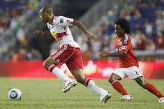

This is info about soccer
If youre ever in a soccer game and u wonder how many people are in the soccer filed it is 11 people in each team
It is played by 250 million players in over 200 countries, making it the world's most popular sport. No one knows exactly when soccer was created, but the earliest versions of the game can be traced back 3,000 years. Soccer is the most popular game in the world. In many countries it is known as football,Another fact is Soccer is the world's most popular team sport. In most parts of the world the game is called football or association football
he FIFA World Cup™ is the biggest single-sport competition in the world. After a preliminary competition, the 32 qualified men's national football teams compete to become world champions in a final competition staged during one month in a host country selected by FIFA.

t's common for a soccer player to run about 6 miles each game. That is equal to running back and forth on a basketball court 350 times! There are 32 panels on a traditional soccer ball—one for each county in Europe
That is called a penatly kick it is awarded if a player commits a direct free kick offence inside their penalty area or off the field as part of play as outlined in Laws 12 and 13. A goal may be scored directly from a penalty kick...Somtimes u make the penelty and sometimes the Goal keeper blocks the ball with his hands or he pushes it away with his hands away from the goli box


There are only three basic pieces of equipment you need to get started on your soccer journey: cleats, guards, and a ball. That being said, it is VERY important that you buy the proper equipment, with the proper fit and style....In my opinun i feel like it odnt matter the bran of cleats or guardes just get ones that will make u feel comfurtabal to play and to be protected in all cost while you play soccer